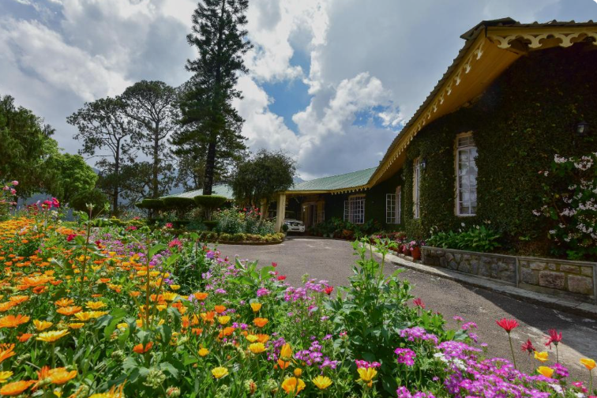
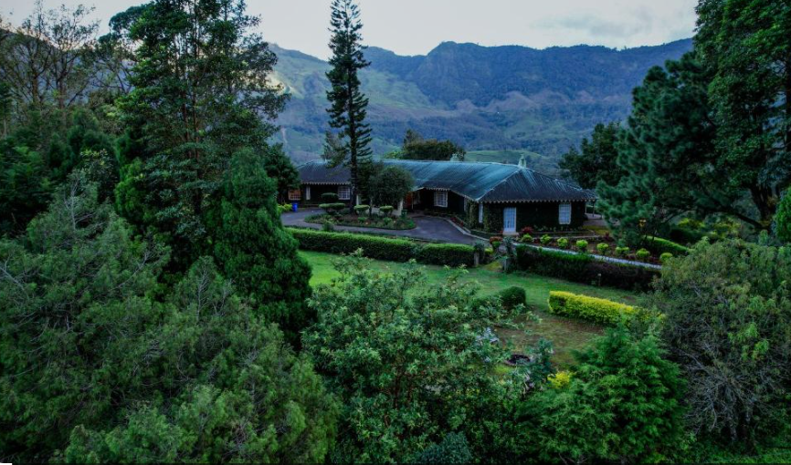

Talayar Valley Bungalow is a historic bungalow located in the beautiful high ranges of Idukki district, Kerala. Built during the British plantation era, the bungalow is surrounded by lush tea estates, forests, and the scenic Talayar Valley. Its peaceful atmosphere and traditional architecture make it an attractive destination for visitors interested in history and nature.
The bungalow offers spectacular views of the valley and nearby hills, making it an excellent place for photography and sightseeing. The cool climate, fresh mountain air, and natural beauty provide a relaxing experience for tourists. Talayar Valley Bungalow is a wonderful destination for those who wish to explore the colonial heritage and scenic landscapes of Idukki.


Talayar Valley Bungalow is a beautiful heritage plantation bungalow located in the Kannan Devan Hills near Munnar, Idukki District, Kerala. Surrounded by lush tea plantations and scenic mountains, the bungalow offers a peaceful stay with colonial architecture, nature walks and breathtaking valley views. It is one of Munnar's finest heritage accommodations. 1
Talayar Valley Bungalow was built during the British plantation era and served as a residence for tea estate managers. Today, the heritage bungalow has been carefully restored while preserving its colonial charm and traditional architecture. 2
The bungalow features classic British colonial architecture with spacious suites, wooden furniture, fireplaces, beautiful gardens and wide verandas overlooking the tea plantations. It combines heritage design with modern comfort. 3
The bungalow is surrounded by tea plantations, flowering plants, native trees and lush greenery of the Western Ghats. The peaceful environment makes it an excellent destination for nature lovers.
Today, Talayar Valley Bungalow is a popular heritage stay in Munnar. Visitors enjoy its colonial atmosphere, tea plantation experiences, peaceful surroundings, private waterfall and panoramic views of the Western Ghats. 4